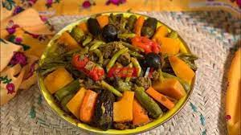

Algarsaan
Ingredients
- Vegetable oil: 2 tablespoons
- Butter: a tablespoon
- Onions: 2 tablets (chopped)
- Lome: 1 teaspoon (ground / black)
- Turmeric: a teaspoon
- Cardamom: half a teaspoon (crushed)
- Cinnamon: half a teaspoon (ground)
- Tomato paste: a tablespoon
Recipe
- Prepare the koshna by heating the oil in a frying pan, then add the onions and saute for 7 minutes until softened.
- Add the ground lumi, turmeric, cardamom, cinnamon and tomato paste, stir, then remove the mixture from the heat.
- Heat the oil in a saucepan over a medium heat, add the onions and saute until it wilts, then add the boiled meat.
- Add the turmeric, coriander, cardamom, cumin, black pepper and salt and stir until the flavors are combined.
- Add tomato paste, grated tomatoes, water and broth.
- Add the carrots, beans, pumpkin, eggplant and zucchini and leave the mixture for 15 minutes over a medium heat, then cover the pot and leave it for 10 minutes until the vegetables are tender.
- Pour the mixture into a serving dish, distribute the koshna and toasted bread, drink the mixture with the broth from the vegetable and meat sauce, and serve it hot.